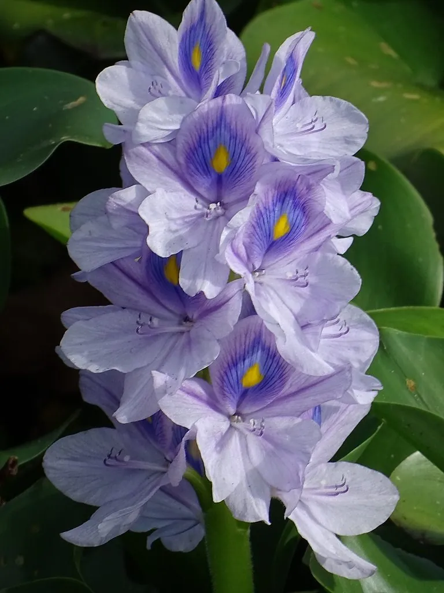

水生植物 · 植物界
凤眼蓝 Eichhornia crassipes

雨久花科多年生漂浮水生植物，花似凤眼，繁殖惊人，被列为中国外来入侵物种，会堵塞航道、破坏生态。
- 分类
- 门被子植物门纲木兰纲目鸭跖草目科雨久花科属凤眼莲属
- 栖息环境
- 池塘、沟渠、河流缓流段等富营养静水，喜高温、阳光充足
- 地理分布
- 原产南美洲亚马孙河流域，现广泛入侵热带、亚热带水体，中国南方常见
- 保护级别
- 暂无评估；中国外来入侵物种（第一批名单）
物种志
凤眼蓝为雨久花科凤眼莲属多年生漂浮水生草本，须根发达，悬于水中。叶片丛生，卵形至圆形，叶柄中部膨大成葫芦状的气囊，使植株浮于水面。花葶自叶丛抽出，穗状花序有花 6–12 朵，花冠漏斗状，蓝紫色，上方花瓣中央有黄色斑点，形似凤眼，花期 7–10 月；果实为蒴果。
凤眼蓝原产南美洲亚马孙河流域，20 世纪初作为观赏植物引入中国，后逸生为野生。它喜高温、富营养的静水，靠匍匐枝和种子繁殖，生长速度极快，在适宜水体中几天就能覆盖大片水面。密集的植株会堵塞航道、影响灌溉和发电，降低水中溶解氧，导致鱼虾死亡，被列入中国第一批外来入侵物种名单。不过它也常被用于净化富营养化水体、制作饲料和沼气原料，利用时须严格控制其扩散。
形态与习性
- 株高漂浮植株高 30–60 厘米，叶柄气囊膨大
- 花期7–10 月，穗状花序蓝紫色
- 果期8–11 月，蒴果
- 光照喜充足阳光
- 水分漂浮于静水或缓流水面，喜富营养水体
- 土壤不依赖土壤，根系直接吸收水中养分
- 繁殖匍匐枝分株与种子繁殖，速度极快
- 主要用途水体净化、饲料、沼气原料，但须防扩散
趣味知识
- 凤眼蓝的叶柄中部膨大成气囊，使植株能稳稳浮在水面上。
- 它繁殖极快，在适宜水体中几天就能覆盖大片水面，堵塞航道。
- 凤眼蓝被列入中国第一批外来入侵物种名单，是典型的外来入侵水生植物。
- 它虽能吸收水中氮磷净化水质，但死亡腐烂后又会造成二次污染。